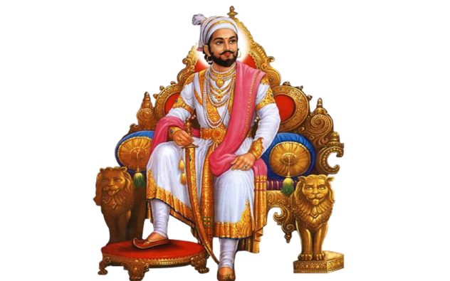

Shivaji Maharaj is one of the great national heroes of India. He created an independent and sovereign state in Maharashtra which was based on justice, welfare of the people and tolerance to all faiths. The aims, objectives and Rajnitee of the Maratha Swaraj under Chhatrapati Shivaji provided a new direction to contemporary politics of India. In course of time, his movement assumed, the form of an all-India struggle; a struggle which was to change the political map of India.
Shivaji Maharaj was born at the Shivneri fort near Junnar in Pune district on 19th February 1630. Shivaji’s mother, Jijabai was the daughter of Lakhuji Jadhavrao of Sindkhed. His father Shahajiraje Bhosale was a prominent sardar in the Deccan. At the time of Shivaji Maharaj’s birth, most of the territory in Maharashtra was under the possession of the Nizamshah of Ahmednagar and the Adilshah of Bijapur. In the coastal belt of Konkan there were two sea powers, the Portuguese and the Siddi. The British and the Dutch who were engaged in expanding their trade also had their factories on the coast. The Mughals, since the period of Emperor Akbar 1 wanted to expand their power in the South. The Mughals launched a campaign to conquer the Nizamshahi Kingdom. The Adilshah of Bijapur allied with the Mughals in this campaign. Shahahajiraje tried to save the Nizamshahi, but he could not withstand the combined might of the Mughals and the Adilshahi. The Nizamshahi kingdom came to an end in A.D. 1636. Thereafter Shahajiraje became a sardar of the Adilshah of Bijapur and was posted in Karnataka. The region comprising Pune, Supe, Indapur and Chakan parganas located between the Bhima and Nira rivers which was vested in Shahajiraje as a jagir was continued by the Adilshah. Shahaijiraje was also assigned a jagir of Banglore. Veermata Jijabai and Shivajiraje, stayed for a few years with Shahajiraje at Banglore till Shivajiraje was twelve years old. Shahajiraje entrusted the administration of the Pune jagir to Shivajiraje and Veermata Jijabai. Shivajiraje grew up amidst the hills and valleys of Pune region under the guidance of his mother Jijabai.
A number of small spurs run eastward from the sahyadris in the Pune region. The extremely rugged valleys enclosed by these are usually known as the Mavals or Khores each named after stream running through it, or after the principal village. Collectively they are known as the Mavals. The inhabitants of this region who are called the Mavalas, were an extremely hardy people. Shivaji Maharaj started the work of founding the Swaraj in this region which is full of hills and valleys and is not easily accessible. He skillfully utilized the geographical features of Maval region for the purpose of the foundation of the Swaraj. He created a feeling of trust and affection in minds of the people. Many associates, companions and Mavalas joined him in his work of founding Swaraj. The objective of Shivaji Maharaj in founding the Swaraj is clearly expressed in his official seal or Mudra which is in Sanskrit. Through this Mudra, Shivaji Maharaj assured his people that the ‘ever-increasing like the crescent-moon, the kingdom of Shivaji, son of Shahaji, will always seek the welfare of the people’.
In the medieval period, forts carried much significance. With a firm hold over a fort, one could defend as well as control the surrounding area and could rule the land. In case of an enemy’s invasion, it was possible to protect the people taking shelter in the fort. The forts situated within the jagir of Shivaji Maharaj were not under his control, but were under the control of Adilshah.. Therefore an attempt to capture the forts meant to challenge the Adilshahi power. Shivaji Maharaj decided to acquire the forts that were within his own jagir. He captured the forts of Murumbdev (Rajgad), Torna, Kondhana, Purandar and laid the foundation of the Swaraj. Shivaji Maharaj was steadily but cautiously aiming at extending and consolidating his power. Those sardars who appreciated his aim were brought to his side, but some sardars in the Adilshahi opposed him. It was necessary to bring them under control for the purpose of founding the Swaraj.